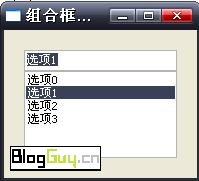

swt组合框combo示例程序-SWT-Java源代码
package com.example.swt.combosample; http://www.blogguy.cn//attachments/date_200710/58d5c61c84809527278326ac373f35c2.jpg
最后贴一段关于FillLayout的说明作为复习
org.eclipse.swt.layout.FillLayout
FillLayout is the simplest layout class. It lays out controls in a single row or column, forcing them to be the same size.
Initially, the controls will all be as tall as the tallest control, and as wide as the widest. FillLayout does not wrap, but you can specify margins and spacing. You might use it to lay out buttons in a task bar or tool bar, or to stack checkboxes in a Group. FillLayout can also be used when a Composite only has one child. For example, if a Shell has a single Group child, FillLayout will cause the Group to completely fill the Shell (if margins are 0).
Example code: first a FillLayout is created and its type field is set, and then the layout is set into the Composite. Note that in a FillLayout, children are always the same size, and they fill all available space.
FillLayout fillLayout = new FillLayout();
fillLayout.type = SWT.VERTICAL;
shell.setLayout(fillLayout);
http://www.blogguy.cn/show-296-1.html